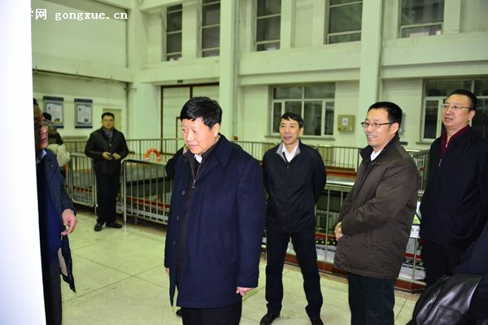
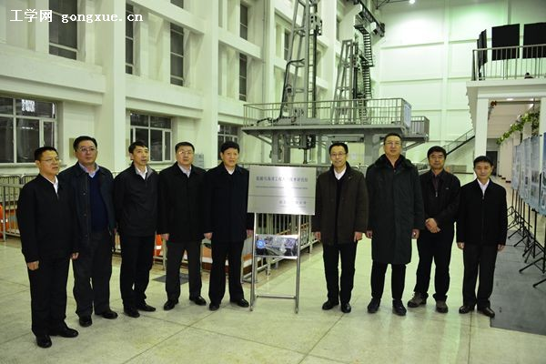

工业和信息化部党组成员、中纪委驻部纪检组组长金书波一行来校调研
作者：霍萍 文章来源：新闻中心 点击数：2764 更新时间：2015/12/20 14:34:48 热 荐 ★★★
驻部纪检组组长金书波、工信部财务司司长王新哲、工信部人教司司长衣雪青一行12月18日来校调研，在校党委书记谷焕民、校长姚郁、校纪委书记姚利民、副校长韩端锋的陪同下，参观了水声技术国防科技重点实验室，听取校领导关于学校成立船舶与海洋工程先进技术研究院的汇报。 金书波一行详细了解了学校水声技术重点实验室的科学研究、人才培养、成果转化等详细情况。学校依托水声技术重点实验室，在矢量声学传感器及其应用技术的研究方面，开辟了水声技术新领域，先后研制出多种结构具有自主知识产权的传感器，并成功应用于多种水声监测系统。金书波对实验室在水下定位技术、信息处理技术、海底地形地貌探测成像技术、小平台声探测技术、振动壳体减振降噪技术、新型换能器技术、DSP系统集成技术，以及水声物理研究和水中目标特性研究等研究方向的雄厚实力和所取得的丰硕科研成果表示赞赏。
副校长韩端锋汇报了学校船舶与海洋工程先进技术研究院的成立背景、目标、思路、组建模式等情况。旨在有效推进我国船舶制造业转型升级、海洋工程装备制造战略新兴产业发展，集成行业创新资源要素，推动机制创新、模式创新、管理创新，努力将其建设成为中国船海领域若干重大方向“国家队”与重大科技成果的孵化地、军民技术融合创新发源地、国内外高层次人才集聚地、复合型人才原产地及国际化竞争桥头堡。金书波对学校为我国“三海一核”领域的科研和人才培养所作出的突出贡献及学校深怀建设海洋强国的责任感和使命感，成立船舶与海洋工程先进技术研究院给予充分肯定，他希望学校在未来发展中为两化深度融合和“中国制造2025”的实施贡献更多力量。
金书波一行与校领导在学校船舶与海洋工程先进技术研究院牌匾前合影